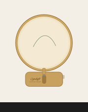

Cyndy P Stitch Craft · LightBurn
The same idea as the little birch display from Amazon: one rounded square, about 3″ × 2¾″, with a keyhole for the hoop screw. One size holds hoops up to 10″. Glue six layers of 1/8″ plywood so it stands about ¾″ thick.

| Color | Layer | Mode | Speed | Power | Passes | Air |
|---|---|---|---|---|---|---|
| Blue | CUT — outline and keyhole | Line, through | 600 mm/min | 90% | 2 | On |
| Magenta | NAME — CyndyP / STITCH CRAFT on the front face | Line, engrave | 3000 mm/min | 14% | 1 | Off |
Set both layers to Line. Convert the name to paths. Do not use Fill. Six squares = one stand (19.2 mm thick, same as the Amazon base). The CyndyP piece is the front. Files are in Downloads as CyndyP-hoop-display-base.svg (1 stand) and CyndyP-hoop-display-base-2pack.svg (2 stands).